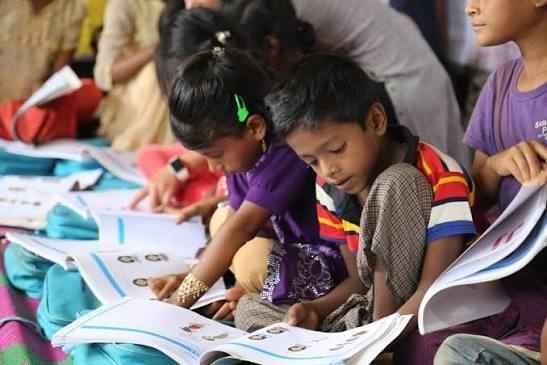
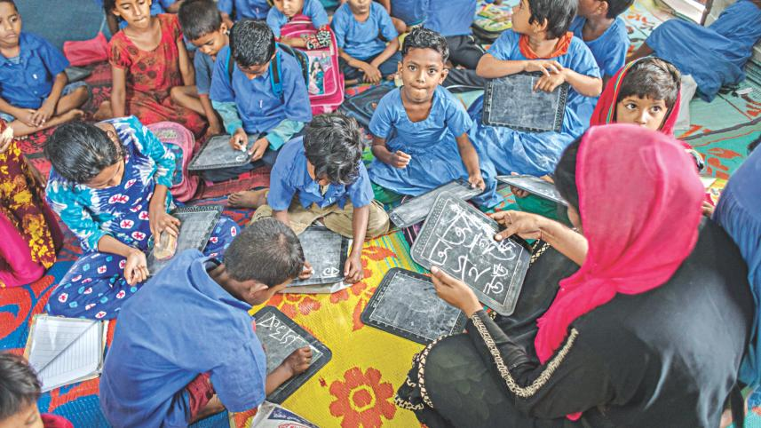
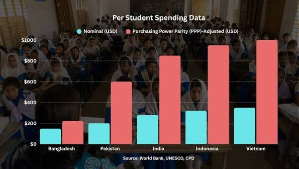
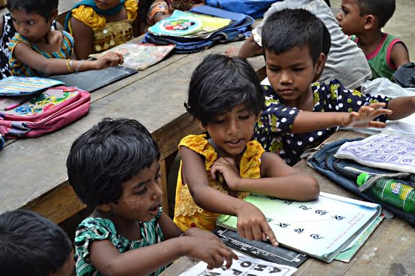

Education is a fundamental human right that every child deserves to access without exception. Regardless of their family background, socioeconomic status, or household income, every young learner should be provided with a safe, nurturing, and supportive environment to pursue high-quality learning. Ensuring equitable access to such standard education not only unlocks each child's full potential but also bridges social inequalities, empowering them to break the cycle of poverty and build a brighter, more prosperous future.

| Exam-Focused Learning | Limited Education Funding | Educational Inequality |
|  |
 |
 |
Too much focus on exams and memorisation can make it harder for students to develop deeper understanding and practical skills. | Some schools lack enough facilities, technology, learning materials and properly supported teachers. | Students from different education streams and backgrounds may have unequal access to resources, English, technology and future opportunities. |